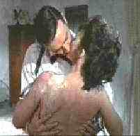

Goldfinger/B+,B+
|
| MGM-UA/1964/110 minutes |
The
third Bond features a very good Gert Frobe as Auric Goldfinger, a man obsessed with his
own name and some reasonable plotting to join Bond and the villains in fateful play.
Connery continues as 007 this time attempting to foil Goldfinger's master plot to
rob Fort Knox. Along with the usual bevy of Bond beauties, Harold Sakata is an implacable
Odd-Job. Honor Blackman is the unforgettably named Pussy Galore, and believe me, nobody
can quite say Pussy like Connery.
 |
Bond:Man
of action.. ãMGM-UA |
One of the most beautifully photographed Bond entries, Goldfinger is still
slightly grainy in the outdoor scenes. The DVD transfer is sharp and colors are rich and
intense. Delivered anamorphic 1.85, the DVD preserves the maximum amount of detail.
transfer The Goldfinger mono soundtrack is the crispest of the first three films. Detail
comes slightly more alive.
|
|
Home Theater Reference System
Laser discs and DVDs are evaluated on the following current home theater
equipment: Stewart 6' x 11' Videomatte 1.33 Gain Screen, 2 Runco 980 Ultra
Projectors stacked, Faroudja LD100 Line Doubler, Lexicon DC1 Surround Processor/Switcher,
2 Pioneeer Elite CLD-97 Laser Disc Players with AC-3 Modification, Sony 7000 DVD Player,
Toshiba SD-3006 DVD Player, Total Media Systems Reference Home Theater Suite, LR Fronts,
Center, LR Sides, LR Rears, 2 Velodyne F1500R Subwoofers, Sunfire Cinema Grand5 Channel
Amp, Sunfire 2 Channel Amp, Lexicon RF Demodulator, Lexicon T-500 System Remote Control,
Speaker Wire and Interconnects by Straight Wire. |
HOT LINKS
The American Widescreen Museum
The wealth of information about widescreen movies is presented in a intelligent and
easy to understand interface. Color in movies is given a similar treatment. |
|

Robert Harris is part
of the dynamic duo that restored Lawrence of Arabia, Spartacus, My Fair Lady and Vertigo.
Harris rides a white horse into the battle to preserve our film legacy. Click on the
image to read more.
|
Check out the Movie Poster Archive
for short bios and images of Susan Hayward, Kirk Douglas, Katharine Hepburn and many more.
This month's featured star is John Wayne. The Feature Archive has articles
ranging from Akira
Kurosawa to Blonde
Bimbos and John
Ford.

Click on the image of The Heistmasters
for an interesting feature on the tough guys that pull off the big jobs.
|
|